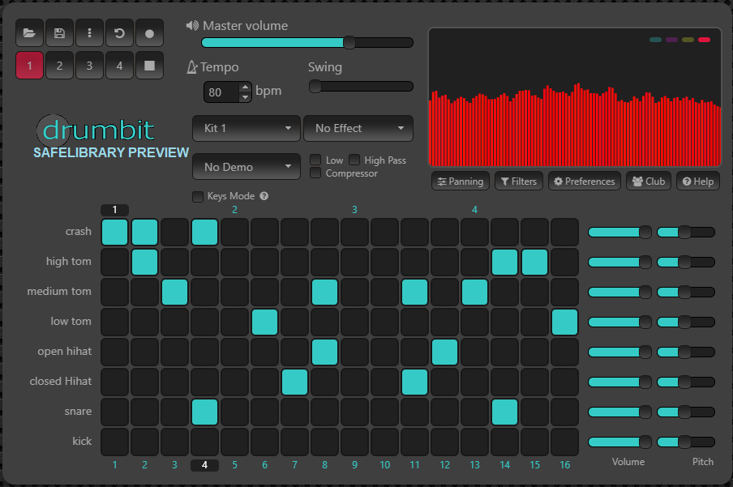

Web Drum Machine
Use Tone.js's Sampler and Sequencer to build a grid-style step drum machine like 808s and TR-style gear.

Modular Synth UI
Drag-and-drop synth components like oscillators and filters to visually design sounds and route signals.

Audio Visualizer
Hook Tone.js output into a canvas or WebGL analyzer for reactive art that responds to frequency and beats.